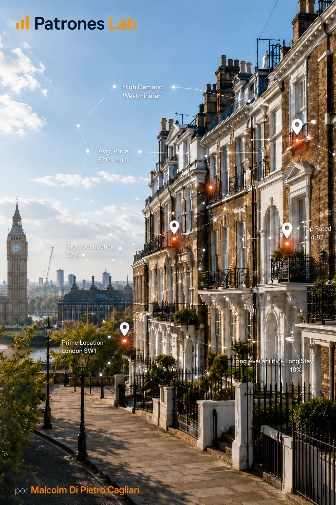
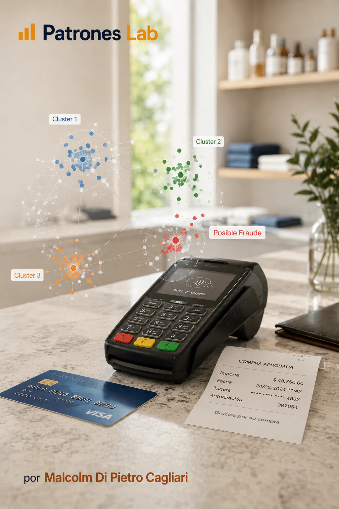

Mô hình định giá Airbnb
Mô hình phân loại bằng hồi quy logistic để xác định các tin đăng có giá tương đối cao hoặc thấp trong từng loại chỗ ở.

Mô hình phân loại bằng hồi quy logistic để xác định các tin đăng có giá tương đối cao hoặc thấp trong từng loại chỗ ở.

Mô hình hồi quy logistic ước tính xác suất ghi bàn của từng cú sút bằng dữ liệu công khai từ StatsBomb, được kiểm định theo trận đấu và áp dụng cho World Cup Qatar 2022.

Phân loại được giám sát bằng cách sử dụng hồi quy logistic để phát hiện gian lận thẻ tín dụng.

Mô hình phân loại để ước tính thiệt hại kinh tế trong các sự kiện khí tượng, so sánh sự cải thiện giữa hồi quy logistic với mạng lưới thần kinh.

Phân cụm không giám sát bằng K-means để phát hiện gian lận thẻ tín dụng.

Phân cụm không giám sát với DBSCAN để xác định khả năng gian lận thẻ tín dụng.